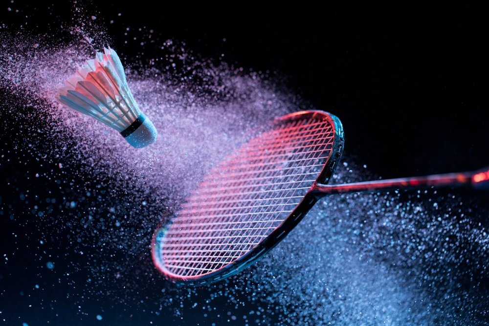

Le badminton
Le badminton, bien plus qu'un simple loisir, incarne ma passion pour le mouvement et la stratégie. Sur le court, chaque échange devient une danse dynamique entre agilité et réflexes. Que je m'engage en simple ou en double, ce sport m'offre une expérience sensorielle unique, alliant compétition et plaisir du jeu. C'est sur le terrain que je trouve non seulement un défi physique stimulant, mais aussi une échappatoire où je me perds avec bonheur dans la pure jouissance du badminton. En résumé, le badminton est bien plus qu'un sport, c'est une source constante d'inspiration et d'épanouissement personnel.
